Lipiec
Wstęp
Opis modelu wykorzystanego do wygenerowania podsumowania znajduje się w zakładce Metodologia.
Poszczególne słowa zostały automatycznie pogrupowane na tematy na podstawie informacji o ich występowaniu w tych samych akapitach i artykułach.
Na wykresach przedstawiono współwystępowanie poszczególnych słów oraz ich kluczowość. Im czcionka jest większa i ciemniejsza, tym wyższa jest kluczowość słowa w danym miesiącu. Linie łączące wybrane słowa oznaczają, że podobieństwo cosinusowe między ich embeddingami wynosi co najmniej 0,4. W celu uproszczenia wizualizacji dla każdego punktu na grafie wybrano maksymalnie dwa połączenia o największym stopniu podobieństwa, które spełniają wskazane kryterium. Podobieństwo cosinusowe wyznaczano za pomocą embeddingów, które są wektorową reprezentacją słów i przechowują informację o ich współwystępowaniu w tych samych akapitach i artykułach. W przypadku grafu, który prezentuje powiązania między słowami ze wszystkich tematów, minimalne podobieństwo wynosi 0,6.
Na wykresach tematycznych przedstawiono nie więcej niż 40 najistotniejszych słów. Analogicznie na głównym grafie umieszczono nie więcej niż 200 najistotniejszych słów w danym miesiącu.
Powiązania między słowami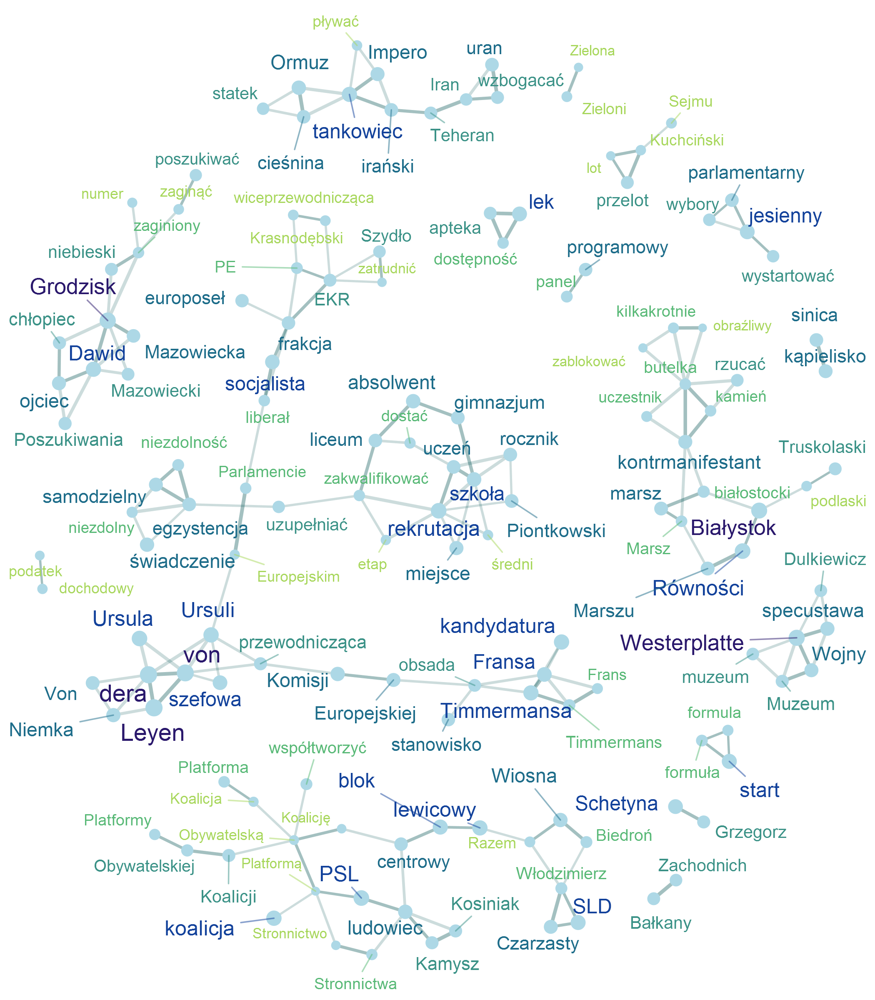
Wybrane słowa kluczowe
Lista tematów
Temat 1
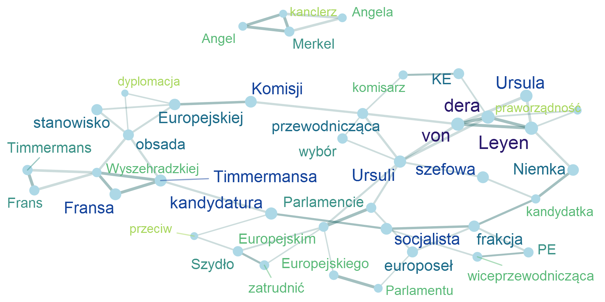
Temat 2
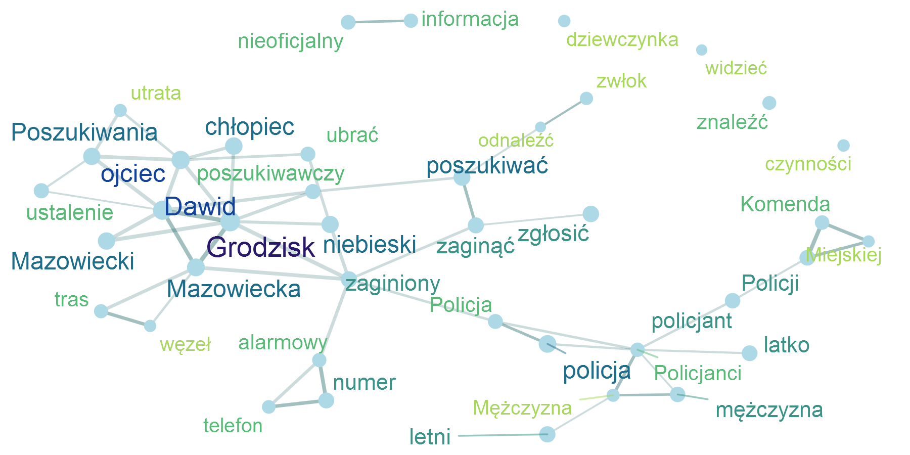
Temat 3
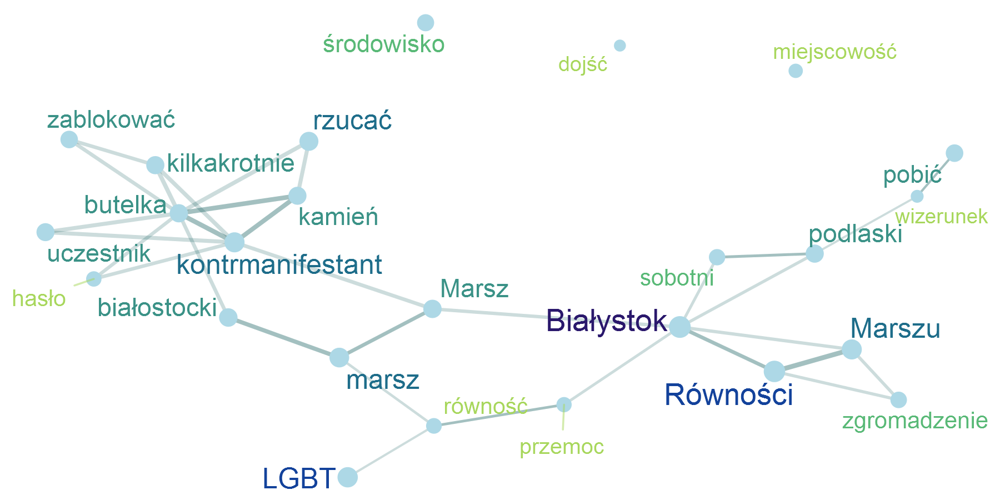
Temat 4
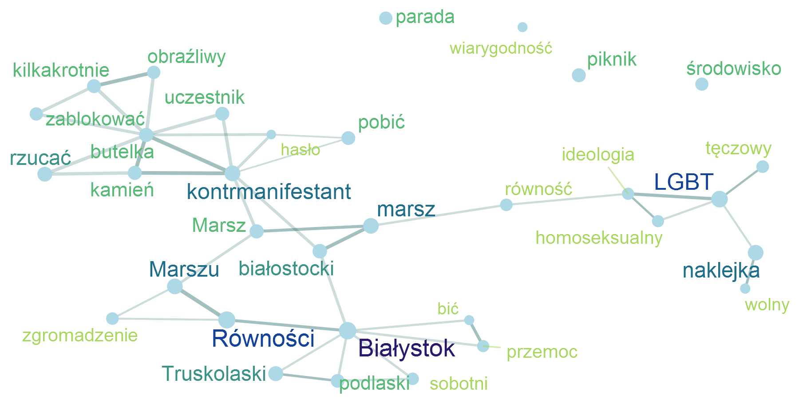
Temat 5
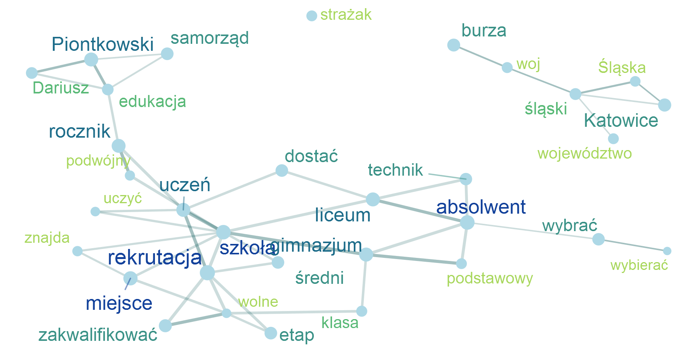
Temat 6
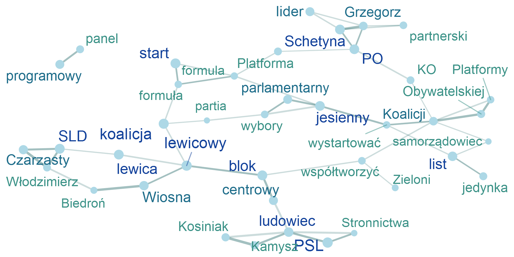
Temat 7
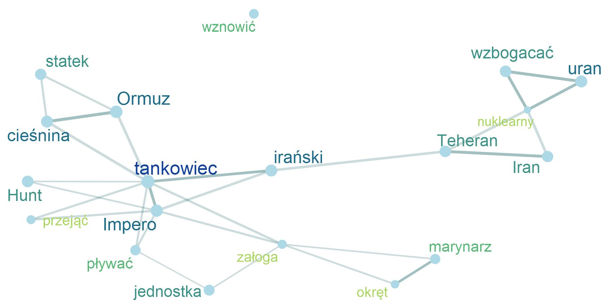
Temat 8
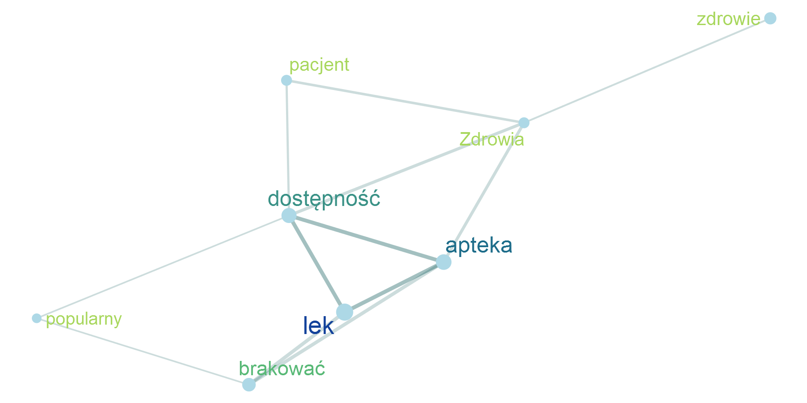
Temat 9
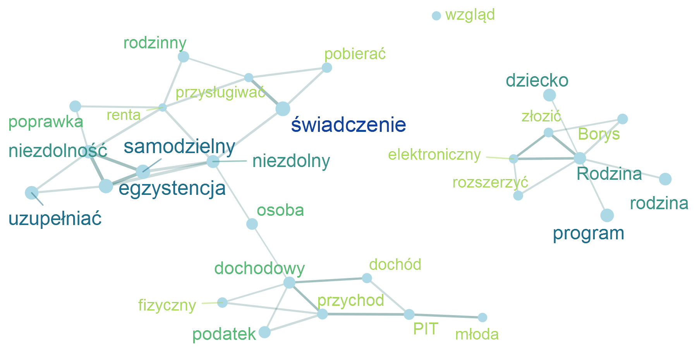
Temat 10
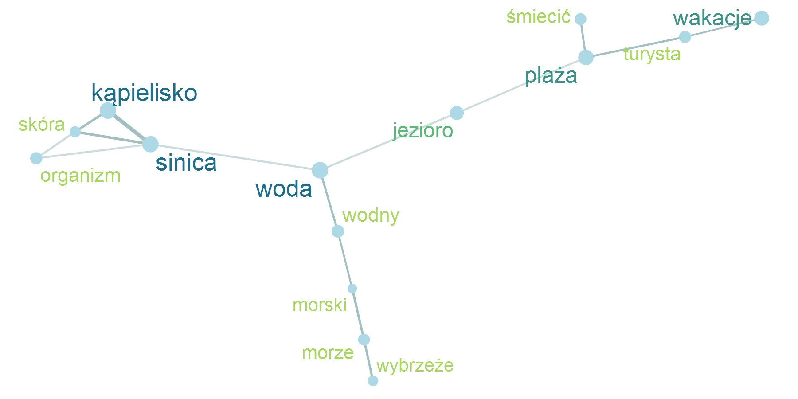
Temat 11
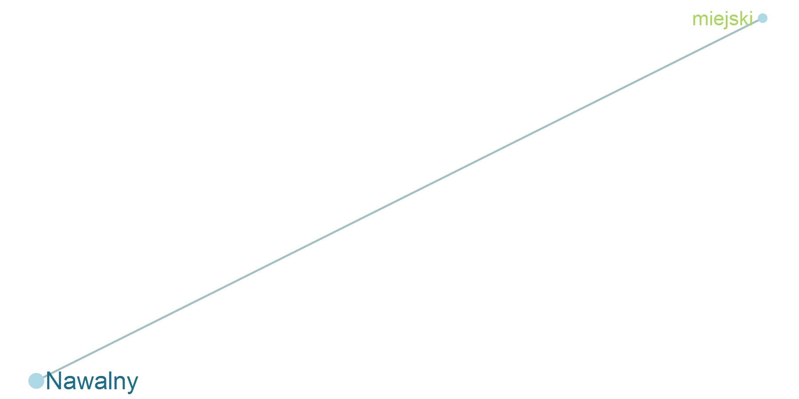
Temat 12
Temat 13
Temat 14

Temat 15
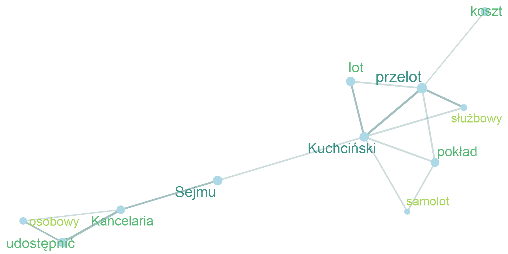
Temat 16
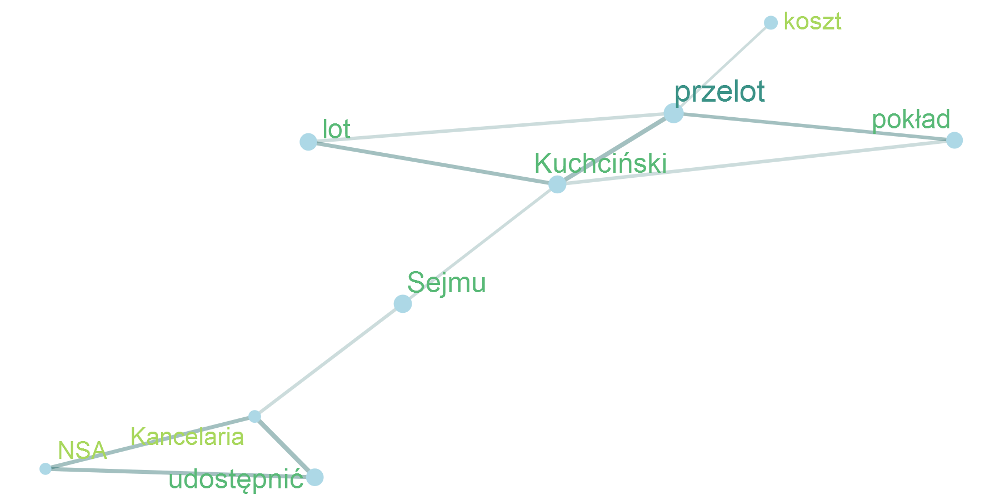
Temat 17
Temat 18
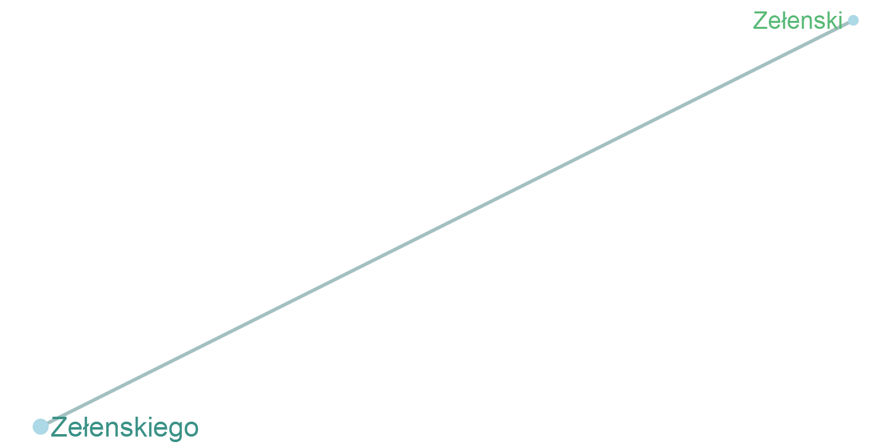
Temat 19
Temat 20

Temat 21
Temat 22
Temat 23
Temat 24
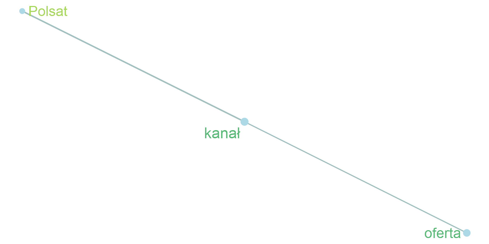